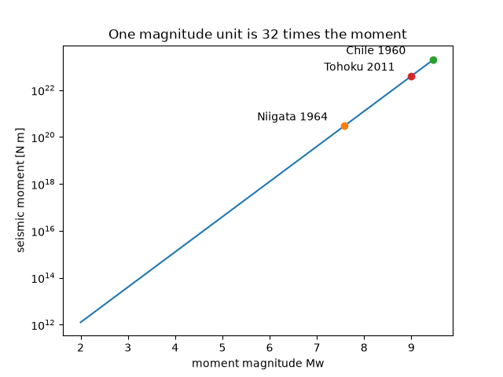

Note
Go to the end to download the full example code or to run this example in your browser via JupyterLite.
Hanks and Kanamori’s moment magnitude (1979)#
Thomas Hanks and Hiroo Kanamori defined a magnitude from the seismic moment so that it matches the older scales where they work and keeps growing for great earthquakes. Each unit of magnitude multiplies the moment by 10^1.5, about 32. The SI form uses Mw = (2/3)(log10 M0 - 9.1).

import matplotlib.pyplot as plt
import numpy as np
from earthsciencekit.seismology import moment_from_magnitude, moment_magnitude
magnitude = np.linspace(2, 9.5, 100)
moment = moment_from_magnitude(magnitude)
np.testing.assert_allclose(moment_magnitude(moment), magnitude)
assert np.isclose(moment_from_magnitude(7) / moment_from_magnitude(6), 10**1.5)
events = {"Niigata 1964": 3e20, "Chile 1960": 2e23, "Tohoku 2011": 4e22}
fig, ax = plt.subplots()
ax.semilogy(magnitude, moment)
for name, m0 in events.items():
ax.semilogy(moment_magnitude(m0), m0, "o")
ax.annotate(name, (moment_magnitude(m0), m0), textcoords="offset points", xytext=(-80, 5))
ax.set(xlabel="moment magnitude Mw", ylabel="seismic moment [N m]", title="One magnitude unit is 32 times the moment")
plt.show()
Total running time of the script: (0 minutes 0.109 seconds)